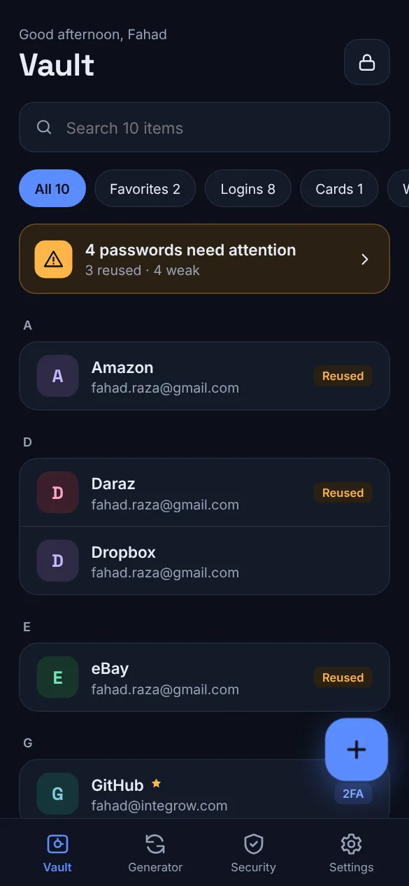

One vault for all of it
Logins, payment cards, secure notes, Wi-Fi networks and identities, organised in folders with favourites and instant search. Copy a username or password with one tap; the clipboard clears itself after 30 seconds.
- Several websites per login, plus your own extra fields
- The last 10 passwords of every login, in case you need an old one
- Tags on each item: Reused, Weak, Breached, 2FA
- Auto-locks when you leave the app or stop using it